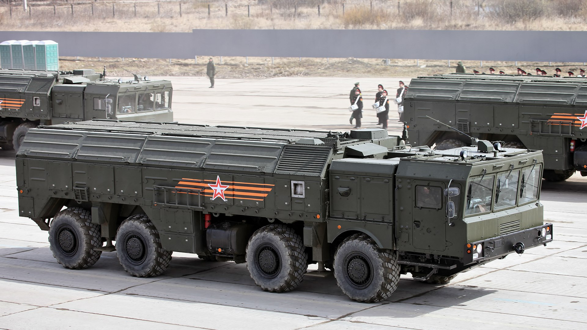

Искандер (ракетный комплекс)
«Исканде́р» (индекс комплекса — 9К720) — семейство российских оперативно-тактических ракетных комплексов (ОТРК): «Искандер», «Искандер-М», «Искандер-К», «Искандер-Э». Разработаны научно-производственной корпорацией «Конструкторское бюро машиностроения» (КБМ) в городе Коломне Московской области.
Основное назначение ракетных комплексов «Искандер» — уничтожение систем ПВО и ПРО противника, а также важнейших объектов, прикрываемых ими, на дальностях до 500 км.
Впервые ракетный комплекс «Искандер» был представлен в августе 1999 года на Международном авиационно-космическом салоне (МАКС) в городе Жуковском Московской области.
История
Разработка ОТРК «Искандер» была начата в соответствии с постановлением ЦК КПСС и Совета министров СССР от 21.12.1988 г. № 1452—294 «О начале опытно-конструкторских работ по созданию ОТРК „Искандер“», как результат в том числе личных усилий главного конструктора КБМ С. П. Непобедимого, доказавшего Военно-промышленной комиссии Президиума Совета министров СССР необходимость создания взамен ОТРК «Ока» ракетного комплекса, не подпадающего под действие положений договора с США о РСМД.
11 октября 2011 года завершён первый этап испытаний обновлённого ракетного комплекса «Искандер-М» с новым боевым оснащением. Ракета 9М723 комплекса «Искандер-М» оснащёна новой корреляционной системой наведения.
Основные характеристики
Назначение комплекса
{kind=link}
Предназначен для поражения боевыми частями в обычном снаряжении малоразмерных и площадных целей в глубине оперативного построения войск противника. Предполагается, что может быть средством доставки тактического ядерного оружия.
Наиболее вероятные цели:
- системы ПВО
- системы ПРО
- командные пункты и узлы связи
- самолёты и вертолёты на аэродромах
- важнейшие объекты инфраструктуры (склады, мосты и тому подобное)
- скопления войск и техники (колонны на марше, площадки хранения техники и тому подобное)
- оперативно-тактические ракетные комплексы
- дивизионная артиллерия: реактивные системы залпового огня, дальнобойная артиллерия
- корабли (требуется внешнее управление ракетой по радиосвязи с передачей координат движущегося корабля от РЛС береговых противокорабельных комплексов или самолётов ДРЛО).
Некоторые авторы издания The National Interest и фонд Jamestown Foundation считают, что тактические характеристики ОТРК «Искандер» переходят от поражения отдельных целей в стратегическое преимущество со способностью России одержать победу на локальном театре военных действий в так называемой концепции «Зона запрета доступа» (Anti-Access/Area Denial, A2/AD). Отдельные зарубежные эксперты считают, что радиус ОТРК «Искандер» существенно выше возможностей ОТРК и дивизионной артиллерии НАТО, поэтому существует риск нанесения неприемлемого ущерба войскам НАТО со стороны дивизионов ОТРК «Искандер» ещё до того, как дивизионная артиллерия НАТО выйдет на дистанцию способности ведения огня. Действительно, основной ОТРК НАТО типа MGM-140 ATACMS имеет дальность 200—300 км, что существенно меньше ОТРК «Искандер».
В выпуске Military Balance 2017 года сделано сравнение ОТРК США и «Искандера», где указано на преимущество «Искандера» в дальности действия, и поступление на вооружение США ракет LRPF дальностью 500 км, как у «Искандера», планируется в США не ранее 2027 года.
{kind=link}
Существуют мнения экспертов издания The National Interest, что наземные войска НАТО не могут бороться эффективно с ОТРК «Искандер» без несения неприемлемых потерь, поэтому основным средством борьбы с ОТРК предполагается авиация. Однако дополнительной сложностью является известная аналитикам НАТО концепция применения ОТРК как «эскалация-деэскалация», которая заключается в том, что в случае тактического успеха НАТО («эскалация») происходит переход ОТРК «Искандер» с нанесения ударов неядерными средствами на тактические ядерные боеприпасы снова до нанесения неприемлемого ущерба, влекущего остановку продолжения операции НАТО («деэскалация»).
Аналитики, рассматривающие сценарии возможных локальных конфликтов России со странами со слабыми армиями, указывают, что атака «Искандеров» может быстро решить исход локальной войны в самом начале, так как уничтожение позиций РЛС локального ПВО, известных по данным радиотехнической разведки, открывает возможность ВКС РФ приступить к массированным бомбардировкам средствами Су-34 и Су-24. Кроме этого, разрушение «Искандерами» аэродромов, командных центров, складов, казарм и ангаров с техникой на базах превращает регулярную армию в дезорганизованные силы без централизованного снабжения и управления в течение первых минут от начала конфликта. Разрушение «Искандерами» мостов и риск нанесения удара по войскам в колоннах на марше ограничивают возможность как манёвра, так и возможность прибытия подкреплений к участкам прорыва. В целом, как отмечают некоторые западные авторы, сценарий применения «Искандеров» схож с массированным применением крылатых ракет НАТО при начале атаки слабых армий, но крылатые ракеты могут быть уничтожены развитым ПВО, в то время как «Искандер» сам является средством поражения ПВО.
Состав комплекса

В состав комплекса входят шесть типов машин (51 единица на ракетную бригаду):
- Самоходная пусковая установка (СПУ) (9П78-1) — предназначена для хранения, транспортировки, подготовки и запуска по цели двух ракет. Полная масса 42 т, полезная нагрузка 19 т, скорость передвижения по шоссе/грунтовой дороге 70/40 км/ч, запас хода по топливу 1000 км. Расчёт 3 человека. Шасси МЗКТ-7930
- Транспортно-заряжающая машина (ТЗМ) (9Т250/9Т250Э). — предназначена для транспортировки дополнительных двух ракет. Выполнена на шасси МЗКТ-7930, оснащёна погрузочным краном. Полная боевая масса 40 тонн. Расчёт 2 человека.
- Командно-штабная машина (КШМ) (9С552) — предназначена для управления всем комплексом «Искандер». Выполнена на колёсном шасси КАМАЗ 43101. Радиостанция Р-168-100КА «Акведук». Расчёт 4 человека.
- Машина регламента и технического обслуживания (МРТО) — предназначена для проверки бортовой аппаратуры ракет и приборов, для проведения текущего ремонта. Выполнена на колёсном шасси КамАЗа. Масса 13,5 тонн, время развёртывания не превышает 20 минут, время автоматизированного цикла регламентной проверки бортовой аппаратуры ракеты — 18 минут, расчёт 2 человека.
- Пункт подготовки информации (ППИ) (9С920, КАМАЗ 43101) — предназначена для определения координаты цели и подготовки полётных заданий для ракет с последующей их передачей на СПУ. ППИ сопряжён со средствами разведки и может получать задания и назначенные цели из всех необходимых источников, в том числе со спутника, самолёта или БПЛА. Расчёт 2 человека.
- Машина жизнеобеспечения (МЖО) — предназначена для размещения, отдыха и приёма пищи боевых расчётов. Выполнена на колёсном шасси КАМАЗ 43118. Машина имеет в своём составе: отсек отдыха и отсек бытового обеспечения. Отсек отдыха имеет 6 спальных мест вагонного типа с откидными верхними лежаками, 2 рундука, встроенные шкафчики, открывающееся окно. Отсек бытового обеспечения имеет 2 рундука с сидениями, складной подъёмный стол, систему водоснабжения с баком на 300 литров, бачок для подогрева воды, насос для перекачки воды, систему слива, мойку, сушилку для одежды и обуви.
- Комплект арсенального оборудования и учебно-тренировочные средства.
Боевые характеристики
- Круговое вероятное отклонение: 10—30 м (в зависимости от применяемой системы наведения); 5—7 м («Искандер-М» с применением ракеты с корреляционной ГСН).
- Стартовая масса ракеты: 3800 кг.
- Масса боевой части: 480 кг.
- Длина 7,3 м.
- Диаметр 920 мм.
- Скорость ракеты после начального участка траектории: 2100 м/c Максимальные перегрузки в процессе полёта — 20—30G (ракета маневрирует в полёте как по высоте, так и по направлению полёта). Максимальная высота траектории — более 100 км.
- Минимальная дальность поражения цели: 50.
- Максимальная дальность поражения цели: 500 км «Искандер-К» (с крылатой ракетой Р-500).
- Наведение: ИНС, ГЛОНАСС, оптическая ГСН.
- Время до пуска первой ракеты: 4—16 минут.
- Интервал между запусками: 1 минута (для пусковой установки 9П78 с двумя ракетами).
- Температурный диапазон эксплуатации: от −50 °C до 50 °C.
- Срок эксплуатации: 10 лет, в том числе 3 года в полевых условиях.
{kind=link}